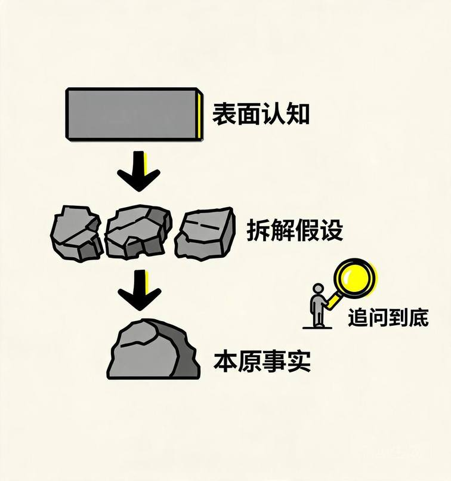
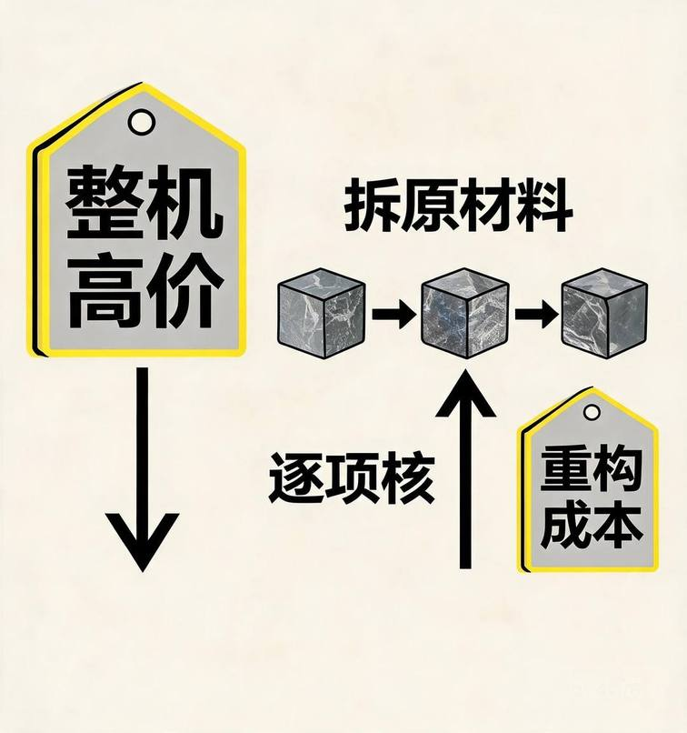
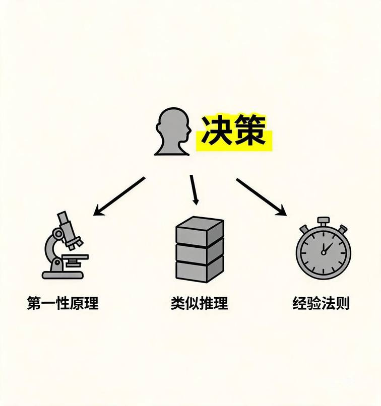
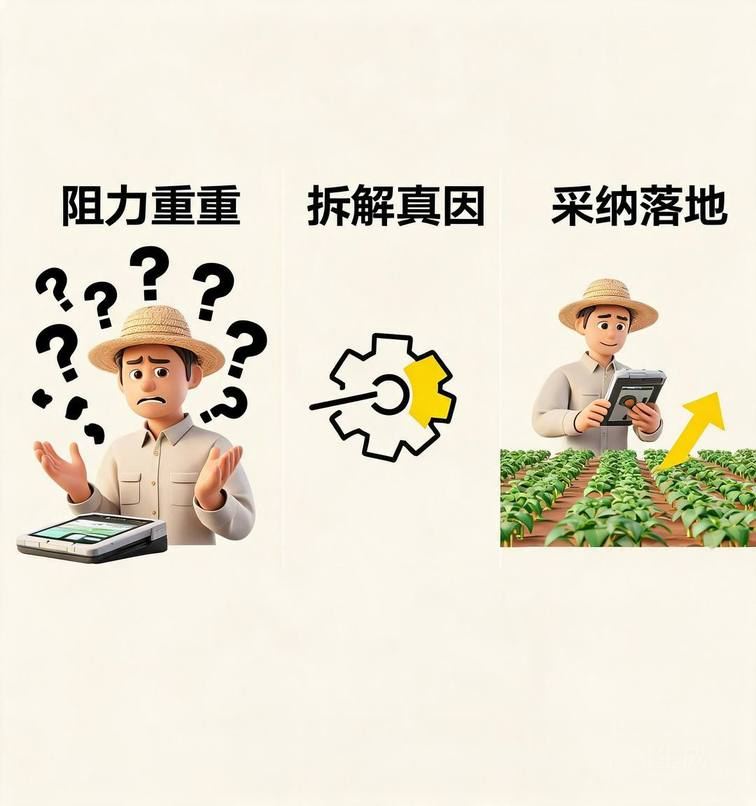

用自己的话说明第一性原理的定义，并指出它与类比推理、经验法则的本质区别；
借助"电池成本"经典案例，复述"分解—验证—重建"三步法；
运用第一性原理，对农业领域（如小农户技术采纳受阻）的真实议题进行结构化拆解；
将该方法迁移至农村发展领域硕士论文的选题、框架与论证环节。

亚里士多德（《形而上学》）：将"本原"（希腊文 archē）定义为——事物被认知的最原始起点，其自身不依赖其他事物而成立，而其他一切均由它推导得出。
白话翻译：所谓"本原"，就是"不能再追问'为什么'的那一步"。比如你问"为什么这面墙站得住？"——因为砖和水泥；"为什么砖能承重？"——因为烧制后的材料强度；"为什么材料有强度？"——到此是物理规律，无法再拆。这最后一步，就是本原。
白话翻译：所谓"本原"，简单说就是"追问到底、再也没法继续问'为什么'的那一层"。例如搭乐高：你说"这台小车能跑是因为轮子"，再问"轮子为什么能转"是轴和摩擦，再问"为什么轴能传动"就到了物理规律——这一层没法再拆，就是本原。
马斯克（2012 年公开论述）：第一性原理是一种"物理学的认知方式"，要旨是把事物"煮干"（boil down）到最基础的真理，再由此向上推演；多数人用类比，是因为成本更低——"历来如此"或"他人皆然"即行动。
白话翻译：他的意思像"把汤熬干看剩什么"——把包裹在事物外面的"大家一向这么干""别人都这么定价"熬掉，只剩下材料、规律这些硬事实，再从这些硬事实重新算一笔账。
第一性原理思维：将研究对象分解至不可再分的基本事实，确认这些事实为真，进而只以这些事实为逻辑起点向上重建结论，不借用任何"既往做法"或"他人选择"的假设。
一句话记住：先把事情"拆到地基"，确认地基是真的，再从地基往上盖——而不是照着别人已经盖好的楼去改。 拆开看三步：① 拆：把"电池贵"拆成"材料钱 + 组装钱"；② 验：核对材料在市场上的真实价格，确认这是硬事实；③ 建：用核实过的事实重新算总价，不被"行业向来卖 600"带跑。
| 环节 | 含义 | 关键词 | 做到什么程度算合格 |
|---|---|---|---|
| 分解 Decomposition | 把问题拆到最基本、可独立验证的事实层 | 拆到底 | 再问一句"为什么"，答案已经是一个查得到、验得明的硬事实（如材料市价、物理规律），而不是另一个观点 |
| 验证 Verification | 确认所及事实为真，而非主观臆断 | 事实为真 | 能说出"这个事实我从哪查到 / 怎么算出来"，而不是"大家都这么说" |
| 重建 Reconstruction | 从事实层重新推演，不受历史路径束缚 | 从零搭 | 得出的结论，每一步都能指回某个已验证事实，不依赖"以前一直这么干" |
学习提示：判断自己是否真懂一个概念，就看能否把它"拆到事实层"。停在结论层，不算懂；能说出结论"为什么真"，才算懂。

背景：2012 年前后，行业认定电池组价格高企为既定事实，历史价格约 600 美元/千瓦时（kWh），产业据此定价。
拆解过程：
电池的物理构成：钴、镍、铝、碳、隔离聚合物、钢壳；
上述原材料在伦敦金属交易所的现货价合计约 80 美元/kWh；
结论：贵不在材料，而在"把材料组合成电池"的工艺与规模。600 与 80 之间的约 520 美元差额，是工程问题，不是物理定律。
实证检验：至 2023 年 11 月，电池组价格降至 139 美元/kWh（经通胀调整的历史低位）。这一结果源于材料成本结构的逻辑推演，而非趋势预测。
关键切点：行业"600 美元铁律"是类比（既往经验）的产物；马斯克把它切到"元素现货价格"这一物理事实层，结论遂得重建。
"切"这个动作具体指什么：他把"电池卖 600 美元"这笔总价，拆成两笔分开的账——材料账（钴镍铝等金属在交易所的现货价，约 80 美元）和组装账（把材料做成电池的人工、设备、规模成本，约 520 美元）。拆开后才看清：贵的是"组装"这笔账，不是"材料"这笔物理事实。这就是把价格"切"到事实层的意思——不让总价替你做结论。

最常混淆的是三种：第一性原理、类比推理、经验法则。下表自六个维度区分。
| 维度 | 第一性原理 | 类比推理 | 经验法则（启发式） |
|---|---|---|---|
| 逻辑起点 | 最基本的、已验证为真的事实 | 相似的既往案例或同类做法 | 既往有效的简化规则、行规或直觉 |
| 核心追问 | 这件事最底层的真相是什么？ | 此前谁遇到过同类情境？ | 通常当如何处理？ |
| 思维速度 | 较慢（须分解与验证） | 较快 | 最快 |
| 适用情境 | 新问题、被认为"不可能"者、须突破现状者 | 大量可比案例、统计稳定的重复情境 | 日常决策、信息不足须快速决断者 |
| 典型失效 | 分析瘫痪；忽视现实经验 | 类比对象误配；幸存者偏差 | 规则过时；环境变迁仍沿用 |
| 代表实例 | 马斯克拆电池成本 | 参照同类项目做预算预估 | "电池历来昂贵"的行业共识 |
基本结论：
三者不是互斥替代，而是功能分工。日常决策用经验法则与类比提效；当听到"这不可能""行业铁律如此"时，启用第一性原理辨明该"铁律"究为物理定律，还是路径依赖的习惯。
最优决策团队常兼采两法：先用第一性原理检验类比的适用性，再用类比做快速校准。前者"破"，后者"稳"。
延伸阅读（一句话版）：有研究者把第一性原理概括为"把零散知识压到最底层结构的能力"。这恰解释了它为何难学——难不在逻辑复杂，而在你得真懂底层，否则压不下去。想深究可读 Murata, R. (2026). First Principles as Maximum Compression…. Zenodo 预印本（见文末参考文献）。

为何智慧农业、可持续种植等更高效的技术，到了小农户层面推广受阻？
既有研究（杨应旭、王志凌，2026，基于贵州 32 户深度访谈）概括为"强政策—弱转化—高风险认知"的迟滞闭环：政策激励强，农户响应弱。
常见归因"农户观念落后""没钱""不会用手机"虽部分成立，但属类比与经验判断，停留表层。以下用第一性原理拆解。
小农户的技术采纳决策，本质由三组数据决定：
成本项（一次性投入 + 持续成本）：硬件（传感器、无人机、自动灌溉阀、网关）、软件（平台订阅、数据分析）、隐性成本（学习、网络、维修可及性）、分摊基数（经营面积）。
收益项（采纳后净增益）：节约（水、肥、药、人工）、增收（产量、品质溢价）；关键约束——收益按单位面积核算。
风险项（试错代价）：技术失灵、绿色溢价兑现不确定、农户年收入基数薄致试错空间极小。
用一个最小算例把三项说清：假设一套智慧灌溉系统总价 3000 元、用 3 年。
若农户经营 3 亩菜地，每年增收约 500 元，则 3 年总收益 1500 元 < 成本 3000 元，亏本，不采纳合理；
若经营 300 亩农场，同样系统年增收可达 5 万元，3 年收益 15 万元 ≫ 3000 元，稳赚，自然采纳。 同一套设备，决定"采纳与否"的不是"农户聪不聪明"，而是"亩数"这个分母。这正说明：问题出在单位面积分摊成本，不在人。
"智慧农业设备昂贵"——物料成本属实，但"昂贵"是相对的。同一系统对千亩农场经济，对三亩菜地成负担。真相是"单位面积分摊成本随规模递减"，此为经济事实，非行规。
"小农户无力采纳"——这是把大规模方案直接套用于小农户的类比。底层真相：采纳门槛 = 总成本 ÷ 收益基数，分母过小则比值畸高。
"农户观念落后"——这是假设而非事实。真实机制为：外部推力与农户内生能力在决策界面发生衰减效应，政策激励被稀释、风险重估失灵，方形成迟滞闭环。
把"衰减效应"说人话：上面发一份"推广智慧农业"的文件，到县里变成会议，到乡里变成标语，到村里变成一张通知——每传一层，针对这家农户具体情况的"推力"就弱一分；而农户自己要看的是"我这三亩地明年的投入和收入"，这个最朴素的算盘没人替他打。于是"强政策"传到田头已经很弱，"弱转化"就此发生。这不是观念问题，是政策推力在传导中层层减损、没接上农户的账本。
切点：把"观念落后"这一模糊归因，切到"成本—收益—风险三组数据 + 规模分母"等可量化项，结论重建。
瓶颈在"单位面积分摊" → 解法非降价，而是组织化聚合（合作社、托管、按亩租赁以服务替代购置），将分母由三亩扩至三百亩，单位成本自然下降。由"规模经济"事实推得。
瓶颈在"试错空间狭小" → 解法非宣传，而是风险分担（政府/平台保底、示范田"见效益而后跟"、绿色溢价由口头承诺转为订单合同）。由"农户风险承受力极低"事实推得。
认知衰减在政策传导"最后一米" → 解法为推力精准化、情境化，而非增发文件。由"推拉失衡"事实推得。
两种思维产出对照：
经验/类比路径：加强宣传、给予补贴、培训数字技能——方向无误但治标，未触"规模分母"与"风险承受力"两项底层变量；
第一性原理路径：以服务模式聚合规模、以合同转移风险——直接改结构，而非改态度。
农户不愿以有机肥替代化肥，底层真相是化肥"短期增产确定性"显著高于有机肥，而农户收益按"当季"结算、风险敞口极薄。这不是环保意识缺失，而是结构性成本—收益—风险错配。第一性原理的解法非"环保教育"，而是"以补贴或订单平抑当季风险"，使环保方式亦不致亏损。
农村发展研究常受两类路径依赖：① 政策话语依赖——直接以政策表述作研究问题起点；② 文献移植依赖——把外文或发达地区经验直接套于本土小农情境。二者皆属类比与经验推理，易致问题悬浮、对策空泛。
政策话语依赖的具体表现：题目定为"数字乡村建设对策研究"，通篇围着政策文件打转，却没去问"这家农户到底卡在成本、还是风险、还是信息"——结论往往变成"应加强宣传、完善机制"这类放之四海皆准的空话。
文献移植依赖的具体表现：直接搬"荷兰经验""日韩模式"当对策，不顾本地农户经营规模、收入结构完全不同，导致"在他国成立"推不出"在我村成立"。
第一性原理要求分解至"农户决策基本约束、制度运行基本激励、技术采纳物理与经济边界"等事实层，再重建分析框架，使问题意识扎根事实而非说法。
| 步骤 | 操作 | 示例 |
|---|---|---|
| 一、厘清不可再分单元 | 界定研究对象的基本单元，而非沿用聚合概念 | "小农户技术采纳"的基本单元非"农户"，而是资源/风险/信息三组约束 |
| 二、剥离假设性前提 | 逐条检验文献隐含前提于本研究是否成立 | "理性经济人"于风险敞口极小农户处，须修正为"风险最小化优先" |
| 三、自事实层重建维度 | 以事实维度替代行政/政策维度 | 沿"成本—收益—风险—制度激励"展开，而非"政府—市场—农户"三段式 |
| 四、事实层校验对策 | 对策须可回溯至基本事实 | "推广智慧农业"须回溯至规模递减事实，导出"先聚合后植入"路径 |
实例一（选题锚定）：
原拟：题目"数字乡村中的农户参与"，默认"参与率低"是因为"数字鸿沟"（没手机、不会用）。
拆解后发现："参与"这件事要成立，得同时满足三件事实——愿学（付出学习成本）、能接（有网络）、肯来（预期净收益为正）。前两项大家都想到了，第三项"预期净收益"被漏掉。
修正后：题目改为"小农户数字服务采纳中的净收益阈值研究"——不再追问"为什么不用"，而是追问"赚到多少他才肯用"。问题意识从"指责观念"下沉到"算清账目"。
实例二（综述检验）：综述"农户绿色生产"文献时，不以"观念—行为"框架罗列，而检验该框架于本土是否成立；基于"推拉失衡与内生迟滞"研究，确认行为响应微弱主因非观念而为结构错配，综述遂由"描述分歧"升级为"检验前提"。
实例三（论证递推）：主体论证须避免"因 A 国成功故我国可行"之类比链条，而给出"本国情境下基本约束 X 成立 → 机制 Y 可运行 → 结果 Z 可期"的事实递推，每环节可回溯至已验证事实。
第一性原理不否定类比与经验法则。文献述评的快速定位、田野调查的初步假设生成，仍宜用类比与经验以提升效率。其适用边界在于：当须突破"政策既定结论"或"域外经验直接移植"时，方启用第一性原理重建事实基础。宜依研究阶段灵活配置三种思维。
练习题：某校食堂称"可降解餐盒成本过高，故只能使用塑料餐盒"。请用第一性原理拆解该论断，识别被当作"铁律"的假设，并重建可能结论。
分解提示：
餐盒总成本 = 物料 + 采购量折扣 + 垃圾处置费 + 环保罚则/补贴；
"可降解昂贵"是否属实，抑或源于采购量过小未获规模折扣；
塑料之"廉价"是否计入后端——清运、填埋、环保合规的隐性成本；
若以"全周期成本"替代"采购单价"重算，结论是否改变。
该练习与马斯克拆电池同构：后者将"昂贵"由采购价切至"元素现货价 + 工艺"，本练习将"昂贵"由采购单价切至"全周期成本"。
第一性原理 = 分解到事实 → 验证为真 → 从零重建；结论可推翻，事实不可推翻。
它与类比、经验法则分工不同：前者"破"、后者"稳"，最优用法是兼采。
农业案例表明：多数"观念问题"现出原形后，都是结构性成本—收益—风险错配。
研究生写作中，它用于剥离假设、重建分析维度、以事实递推论证。
用一句话给第一性原理下定义，并说明"分解—验证—重建"分别指什么。
马斯克拆电池时，把行业"600 美元铁律"切到了哪一层事实？这个切点为什么关键？
第一性原理、类比推理、经验法则，各自的适用情境与典型失效是什么？
针对"小农户不采纳智慧农业"，用三步法写出你的拆解与重建结论。
你的论文选题是否存在"政策话语依赖"或"文献移植依赖"？如何用第一步"厘清不可再分单元"修正？
Aristotle. Metaphysics（"本原/archē"定义之源流）.
Elon Musk. 2012 年关于第一性原理之公开论述；Startup Archive 收录原文（电池 600→80 美元/kWh 拆解）. https://www.startuparchive.org/p/elon-musk-explains-first-principles-thinking
电池价格追踪：2023 年 11 月电池组价格降至 139 美元/kWh（经通胀调整历史低位）.
Murata, R. (2026). First Principles as Maximum Compression…. Zenodo 预印本. https://doi.org/10.5281/zenodo.18674314
Faster Than Normal. "First Principles Thinking vs Reference Class Forecasting". https://fasterthannormal.co/compare/first-principles-vs-analogy
杨应旭、王志凌 (2026). 《推拉失衡与内生迟滞：农户绿色生产的行为逻辑及协同调适路径》. 贵州财经大学学报. https://gcxb.gufe.edu.cn/CN/Y2026/V44/I02/44
Finco, A. et al. (2021). The Economic Results of Investing in Precision Agriculture…. Agronomy, 11(8), 1520. https://doi.org/10.3390/agronomy11081520
UNDP (2021). Precision Agriculture for Smallholder Farmers. https://www.undp.org/sites/g/files/zskgke326/files/2021-10/UNDP-Precision-Agriculture-for-Smallholder-Farmers.pdf
王术坤 等 (2024). 《我国运用智慧农业的现状及对策研究》. 中国社会科学院农村发展研究所. http://rdi.cass.cn/yjcg/202412/P020241211390231312050.pdf